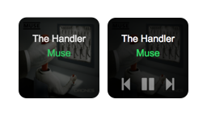

SpotSpot
Spotify mini-player for macOS

SpotSpot is an open-source (MIT license), always on-top, mini-player for controlling Spotify in macOS. It is an Electron-based app, and utilises André Haveman’s excellent Spotify-Node-Applescript package.
SpotSpot is not affiliated with Apple, Spotify or Muse and these are the trademarks of the respective parties.